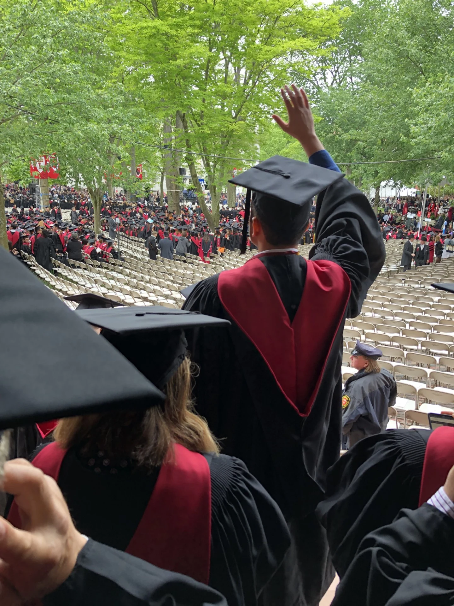

University of Sussex / Academic case study
From quantum research
to commercial value.
Five connected levers for turning scientific progress into a market people can use.
Education & ideas
Study has always run alongside practice. These academic case studies show how I connect strategy, people, technology and the financial case.
University of Sussex / Academic case study
Five connected levers for turning scientific progress into a market people can use.
Harvard University / Academic case study
What Liverpool Football Club reveals about strategy, talent and sustained performance.
Original academic analysis, adapted for this site. The original papers are available to read and download. Proposed and modelled benefits are distinct from delivered client outcomes.
My education
Commercial foundations / 2013
Bachelor of Commerce (Finance)
with Bachelor of Laws studies
Valuation, finance, corporate law and M&A. A foundation in how capital and decisions shape organisations.
Commerce degree completed; law studies preceded the move to Harvard.Management & strategy / 2019
Master of Liberal Arts in Management (ALM)
Management study completed alongside full-time work at Accenture Strategy. Connecting corporate strategy, finance, organisational behaviour and execution.
GPA 4.0/4.0 · Completed alongside my Accenture Strategy role.Emerging technology / 2024–2026
MSc, Quantum Technology Applications and Management
My study focus connects quantum applications with AI, cybersecurity, commercialisation and practical adoption.
Additional education studies in leadership and administration support my approach to workforce enablement.
Harvard University / 2019
I completed my ALM in Management while working at Accenture Strategy. The learning went straight back into practice: better questions, stronger commercial judgement and a deeper understanding of how organisations change.
Read my Liverpool FC paperContinue the conversation